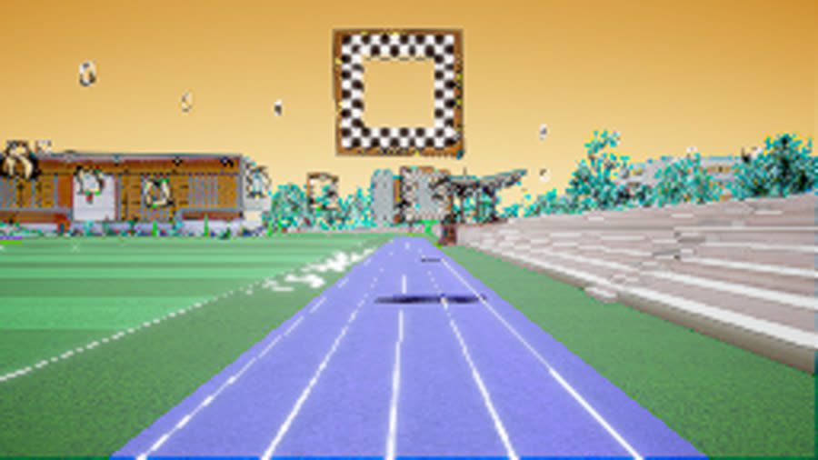
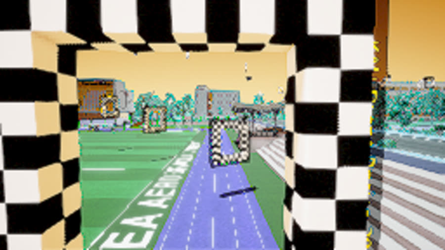

AirSim 시뮬레이터 기반 드론 레이싱 대회에서, YOLO로 학습한 게이트 인식과
구간별 강화학습·비전 기반 제어를 결합해 코스를 자율비행하는 드론을 개발했습니다.
수상에는 이르지 못했지만, 비전 인식과 비행 제어를 하나의 파이프라인으로 엮어 본
첫 자율비행 프로젝트였습니다.
AirSimYOLO강화학습Vision 제어
주행 화면

체커보드 게이트 접근 — 비전 인식 대상

게이트 통과 직후 다음 구간 진입
수행 내용
YOLO 게이트 인식 — 시뮬레이터 화면에서 체커보드 게이트를 인식하도록 YOLO 모델 학습, 게이트 중심 좌표를 제어 목표로 변환
구간별 전략 — 코스를 구간으로 나눠 구간 특성(직선·선회)에 맞는 강화학습·비전 기반 제어를 적용
AirSim API 연동 — Python 클라이언트로 기체 상태 수신·속도 명령 전송 루프를 구성해 1바퀴 완주 주행 기록